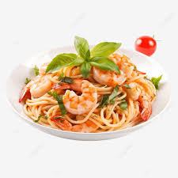

Lasagna

Description
Pasta with shrimp is a delightful dish that combines tender pasta, such as spaghetti or linguine, with succulent, sautéed shrimp. The shrimp is often cooked in a light, flavorful sauce made with garlic, olive oil, and sometimes white wine or lemon juice. This sauce coats the pasta, infusing it with a rich, savory taste. Fresh herbs like parsley, and a hint of red pepper flakes for spice, can elevate the dish, while cherry tomatoes add a burst of color and sweetness. The result is a fresh, vibrant meal that's both satisfying and elegant.
Ingredients
- 200g pasta (like linguine or spaghetti)
- 300g shrimp (peeled and deveined)
- 2 tablespoons olive oil
- 3 cloves garlic (minced)
- 1/2 teaspoon red pepper flakes (optional)
- 1/2 cup white wine or chicken broth
- 1/2 cup cherry tomatoes (halved)
- 1/4 cup fresh parsley (chopped)
- Juice of 1 lemon
- Salt and pepper to taste
- Grated Parmesan cheese (optional)
Instructions
- Cook the Pasta:
- In a large pot of salted boiling water, cook the pasta according to package instructions. Drain and set aside.
- Prepare the Shrimp:
- While the pasta is cooking, heat the olive oil in a large skillet over medium heat. Add the garlic and red pepper flakes, and cook for about 1 minute until fragrant.
- Cook the Shrimp:
- Add the shrimp to the skillet and cook for 2-3 minutes on each side until they turn pink and opaque. Remove the shrimp from the skillet and set aside.
- Make the Sauce:
- In the same skillet, add the white wine or chicken broth and cherry tomatoes. Cook for 3-4 minutes until the tomatoes start to soften and the liquid reduces slightly.
- Combine:
- Return the shrimp to the skillet, add the cooked pasta, and toss everything together. Squeeze in the lemon juice, season with salt and pepper, and mix well.
- Serve:
- Garnish with fresh parsley and a sprinkle of Parmesan cheese if desired. Serve hot.
Enjoy your pasta with shrimp!